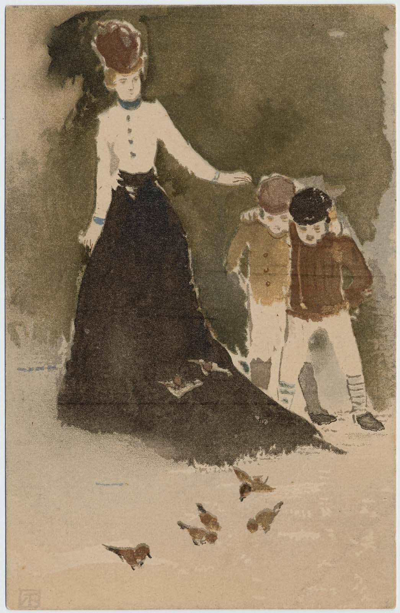
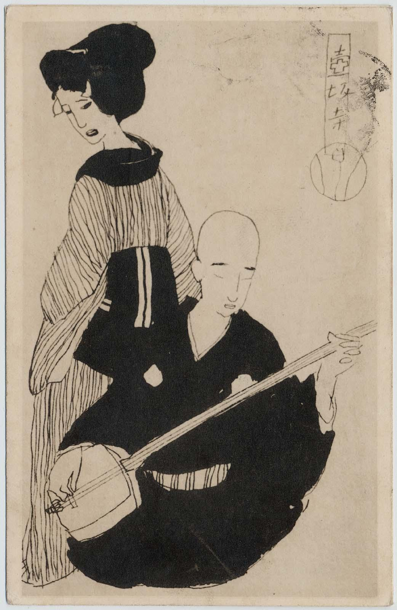

THE WEST: SPARROWS IN THE PARK
Nakamura Fusetsu (1866-1943)
From series World Panorama
Postcard
Late Meiji Era

Nakamura Fusetsu (1866-1943)
From series World Panorama
Postcard
Late Meiji Era
Well before the beginning of the last century, postcards had become a prvileged means of communication around the world. For the Japanese public in particular,
now able to travel after serveral centuries of relative isolation, postcards were popular souvenirs of what were still long, expensive, and occasionally perilous sea voyages
between Japan and Europe or the United States. Serving as visual mementors of those trips, the cards were saved for both their sentimental and artistic value. Collected
and viewed in sequence, these cards can tell us much about the sensibilities, life, and travels of thsoe who sent and received them.
Here, by way of example, are some postcards
found among those collected by Mori Ōgai (1862-1922), one of the great novelists of the early modern period in Japan. Ōgai was one of the first young intellectuals to go to Europe
for any extended period of time. Sent by the Army to study advanced methods of hygiene in Germany, he lived in Munich, Leipzig, Dresden, and Berlin from 1884 to 1888. Ōgai later sent
to his friend the writer and poet Ueda Bin (1874-1916) some of the early stories he had written as a result of those youthful experiences in Germany. When Ueda visited Munich in 1908,
he sent a postcard as a reminder of his pleasure in reading Ōgai's fictionalized experiences there several decades earlier.
Unnamed Artist
From Bunkyō Ward Ōgai Memorial Hongō Library
Postcard (not included in book catalogue)
1905

Takehisa Yumeji (1884-1934)
From series Postcards of plays
Postcard
1912
Ōgai himself led a double career, as a writer and as a medical officer. By 1907, he had become surgeon-general of the Japanese army. Several years before, he had been responsible for all the medical
arrangements for the Second Army during the fierce months of the Russo-Japanese War (1904-05). He and those close to him availed themselves of postcards for quick communication. The card illustrated
here, for example, was sent by Ōgai to his son Otto. Such proliferation and ever-wider use of postcards suggest several aspects of the powerful impetus that came to Japanese culture in general, and
the visual arts in particular, through these new conncetions with the West. In that sense, the cards created in Japan can serve as a visual emblem for vast shifts wihtin that society, as well as an
indication of Japan's shfiting role in the larger world...
*Read more in the full text